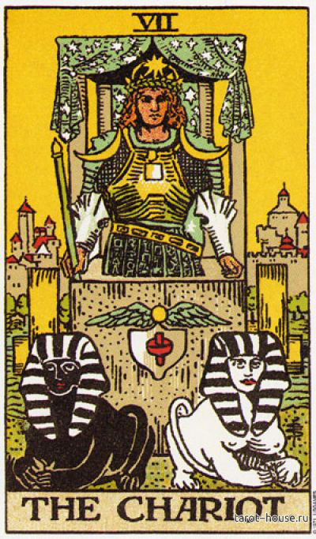
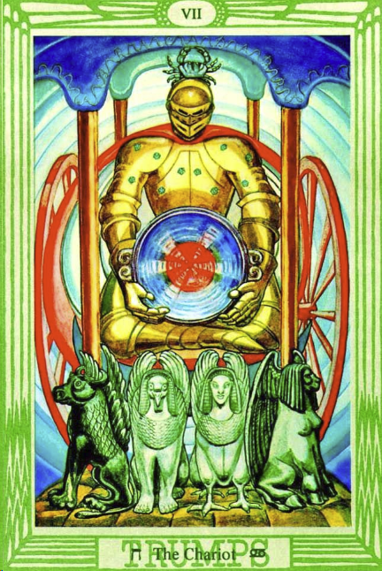
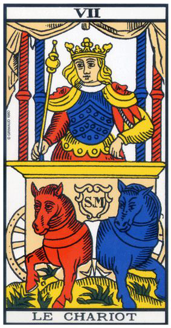
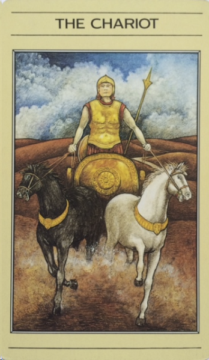
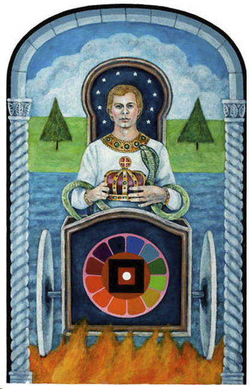
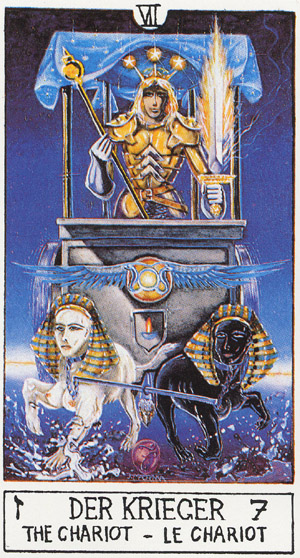
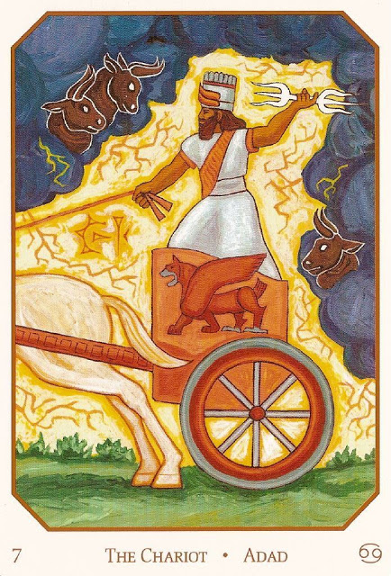
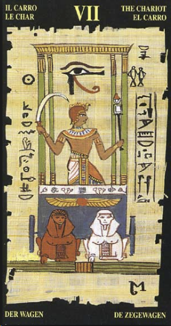
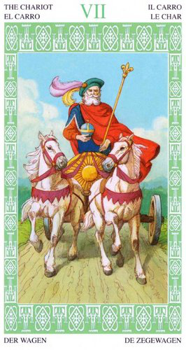
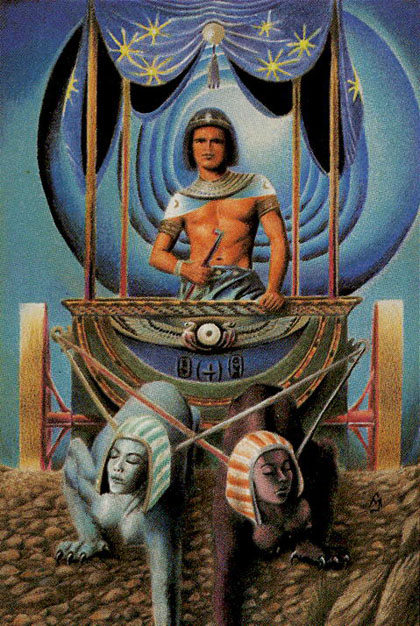

детали на карте (таро Уэйта):
Мужчина в латах с короной и жезлом (на меч не похоже) - герой, победоносец, завоеватель. (Есть такой фильм "Троя" с Брэдом Питом, так там он везжал в город на колеснице как герой)
Накидка на колесницу в виде ткани со звездочкама - небо покровительствует
В упряже два сфинкса - пересекаение с 2СА (две колонны). Наверное это по той же теме - две поярности, добро-зло
детали на карте
Кроули:
вместо двух сфинксов, на карте 4 ангела в виде льва, орла, человека и тельца (привет их иерофанта), но у них части перепутаны. Глядя на картинку, возникает десткое желание сделать правильно )))
цвет: красный, желтый (теплота, солнечность, активность), зеленый (жизнь)
фигура:
тетрис из двух одинаковых деталей (но разных по цвету), которые собирают одно целое.
символ:
два треугольника, один наверх, другой вниз
буква:
Y
ощущения
две полярности в одном. Но одному трудно быть без другого. Ситуация когда от чего-то надо отказаться в пользу другого, а также глубоко осознать свой выбор. Ситуация выбора, своего рода испытания. Выбор между прошлым и будущим, старым и новым, левым и правым.... Карта может даже описывать своего рода внутриличностный конфликт, когда одна часть тебя хочет одного, другая другого.
ключевые слова: выбор, два в одном, осознанность выбора, принятие решения
запах:
две ноты в одном
звук:
два созвучных голоса, но в разном диапозоне.
вкус:
яблоко кисло-сладкое, сначала кусаешь кислое, а потом жуешь оно сладким становиться. Лакрица тоже меняет свои вкусы во рту :))
астрология:
Близнецы, ну все таки немного влияние Весов и Водолея даже))
мифология:
Адам и Ева, Кастор и Полукс, Ромул и Рем, Идзанами и Идзанаки
Фразы: "Два в одном", "Дудочка и кувшинчик"
способности: расщеплять на полярности
окружение: средство 2 в 1, горячий чай со льдом, шоколад с солью
амулеты: инь-ян, есть амулетики для двоих: ну там две половинки одного целого , сердечка например.